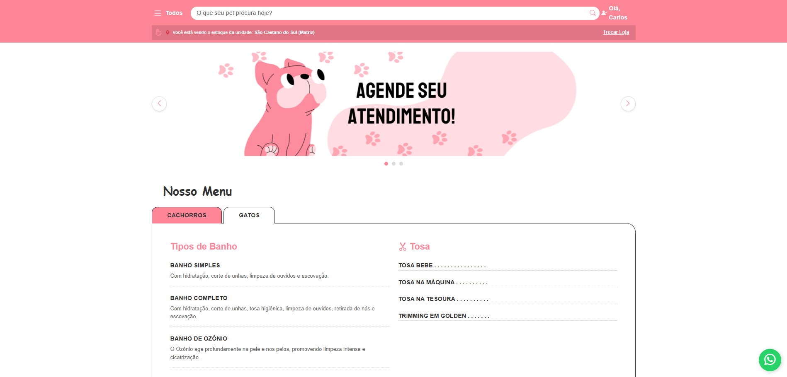

Garantindo software confiável, rápido e sem falhas ocultas.
Olá, eu sou Juan Carlos Zapata Cornaglia tenho 21 anos, sou formado em Análise e Desenvolvimento de Sistemas. Combino pensamento crítico de Quality Assurance com domínio técnico em Lógica de Programação, Bancos de Dados (Oracle/PLSQL, PostgreSQL, MySQL) e Back-end para investigar defeitos na raiz.
Por que minha base de engenharia me torna um QA mais completo
Tenho 21 anos, moro na Vila Prudente em São Paulo (SP) e sou graduado em Análise e Desenvolvimento de Sistemas (ADS) pelo Centro Universitário FAM. Minha paixão por tecnologia nasceu da curiosidade de abrir sistemas por dentro e entender exatamente como cada regra de negócio, tela e consulta de banco se conectam para entregar uma experiência impecável ao usuário.
Diferente de uma abordagem superficial que testa apenas o clique na tela, construí uma base sólida em lógica de programação, linguagens estruturadas e orientadas a objetos (C, C++, Java OO, Python, PHP e JavaScript) e modelagem avançada de dados (Oracle Database, PL/SQL, PostgreSQL e MySQL). Quando encontro um comportamento inesperado, eu consigo ler o código, inspecionar a requisição HTTP e auditar o registro direto na tabela.
Coloquei essa visão à prova no desenvolvimento e na garantia de qualidade do Regia & Tinas Care — sistema real criado em equipe para uma rede de pet shops e avaliado sob a norma internacional ISO/IEC 25010. Participei desde o levantamento de requisitos com os proprietários e modelagem no brModelo até a criação de cenários BDD, testes exploratórios de borda e regressões pós-deploy em produção.
Também atuei na organização e suporte técnico do projeto extensionista de responsabilidade social da FAM, fortalecendo minha comunicação com usuários reais e trabalho em equipe ágil. Hoje, direciono essa bagagem para times de Quality Assurance que buscam alguém analítico, proativo e capaz de unir testes manuais estratégicos, automação E2E/API e auditoria SQL.
Análise de Causa Raiz
Não apenas reporto o sintoma: inspeciono Console e Network no DevTools, valido o contrato JSON da API e rodo queries SQL para entregar ao dev o diagnóstico exato do bug.
Visão de Negócio & BDD
Transformo critérios de aceite em cenários Gherkin cobrindo fluxos felizes, exceções, permissões de perfil e valores limite antes mesmo do código ir para produção.
Automação & Integridade SQL
Estruturo suítes E2E com Cypress, coleções automatizadas no Postman/Newman e validações em Oracle PL/SQL, PostgreSQL e MySQL.
Casos de Teste, BDD & Bug Reports
Estruturo matrizes de casos de teste, cenários Gherkin legíveis para todo o time e relatórios de defeitos completos com passos de reprodução, evidências visuais e severidade clara.
Como eu valido um sistema de ponta a ponta
Selecione cada camada da arquitetura para ver como aplico testes manuais, automação, APIs e banco de dados.
Testes Funcionais, Exploratórios e Relato de Bugs
Executo jornadas completas testando entradas inesperadas, valores negativos, campos vazios e responsividade. Todo defeito encontrado é documentado com passos de reprodução, evidência visual, logs de rede e impacto no negócio.
- Smoke Tests, Testes Funcionais e Regressão pós-deploy
- Inspeção de requisições HTTP e erros JS via Chrome DevTools
- Escrita de cenários claros usando BDD / Gherkin
[BUG-108] Cadastro de produto permite quantidade negativa em estoque
Input enviado: quantidade = -5 | Esperado: HTTP 400 / Bloqueio UI
Evidência: Payload capturado + print + query de verificação no banco.
Automação Web Ponta a Ponta com Cypress & Pytest
Automatizo fluxos críticos repetitivos — como autenticação por perfil, agendamentos e movimentação de estoque — garantindo agilidade nas entregas sem quebrar funcionalidades existentes.
- Seletores resilientes e asserções explícitas de estado
- Testes de fluxos positivos e mensagens de erro obrigatórias
- Integração com pipelines Git/GitHub
✓ autentica administrador e carrega unidade Matriz (0.41s)
✓ bloqueia agendamento duplicado no mesmo horário (0.53s)
✓ atualiza saldo de estoque após pedido aprovado (0.62s)
✓ restringe acesso financeiro para perfil operacional (0.38s)Validação de APIs RESTful com Postman, Newman & Swagger
Testo a comunicação direta entre cliente e servidor (Back-end Python/Flask e PHP), conferindo status codes, estrutura do JSON, autenticação por token/sessão e tratamento de exceções.
- Validação de contratos OpenAPI / Swagger
- Testes orientados a dados (Data-Driven) e variáveis de ambiente
- Execução automatizada via linha de comando com Newman CLI
{
"agendamento_id": 219,
"unidade": "São Caetano",
"servico": "Banho e Tosa",
"status": "CONFIRMADO"
}
✓ Status Code 201 | ✓ Schema validado | ✓ Tempo < 200msAuditoria de Dados em Oracle PL/SQL, PostgreSQL & MySQL
Com conhecimento sólido em modelagem relacional e programação de banco de dados, valido se cada operação da aplicação respeitou constraints, chaves estrangeiras, triggers e regras de negócio.
- Consultas complexas com JOINs e subqueries para auditar registros
- Conhecimento em Oracle Database, blocos PL/SQL, PostgreSQL e MySQL
- Modelagem conceitual e lógica (MER/DER) no brModelo
SELECT l.nome_loja, p.nome_produto, p.quantidade_estoque
FROM produto p
INNER JOIN loja l ON p.id_loja = l.id_loja
WHERE p.quantidade_estoque < 0;
-- Resultado: 0 linhas retornadas (Constraint validada)Minha caixa de ferramentas em QA, Dados e Desenvolvimento
Conhecimentos consolidados na graduação em ADS, certificações e projetos práticos.
Testes, Automação & APIs
Bancos de Dados & PL/SQL
Programação, Web & IoT
Regia & Tinas Care — Do Sistema em Produção à Arquitetura de Dados
Sistema real desenvolvido para uma rede de pet shops, unindo interface responsiva, modelagem de banco de dados e garantia de qualidade.

Arquitetura, Banco de Dados e Testes em Produção
O Regia & Tinas Care centraliza a operação de múltiplas unidades de pet shop: controle de estoque individual por loja, agendamentos de banho e tosa, cadastro de pets/tutores, gestão de funcionários e controle de pedidos/fornecedores.
Base acadêmica e certificações verificáveis
Clique em qualquer certificação abaixo para abrir a página dedicada com a imagem do certificado e o resumo detalhado.
Tecnologia em Análise e Desenvolvimento de Sistemas (ADS)
Centro Universitário das Américas (FAM) · São Paulo, SP
Postman: Testes de API na Prática — Fundamentos Essenciais
APIs RESTful, Swagger, workspaces, collections, variáveis dinâmicas (Faker), Data-Driven (JSON/CSV) e relatórios Newman.
Ver imagem e resumo completo →Formação Inteligência Artificial: Do Zero ao Avançado (2026)
Capacitação prática em IA Generativa, automação, agentes inteligentes e produtividade aplicada a engenharia e QA.
Ver imagem e resumo completo →Guia em Testes de Software: Teoria e Prática. Plus: ChatGPT
Fundamentos e processos de QA, planejamento e execução de cenários, automação e testes não funcionais.
Ver imagem e resumo completo →Teste de Software: Seja um Expert e Impulsione Sua Carreira
Níveis de teste (Unidade, Integração, Sistema, Aceitação, Regressão), Caixa Branca/Preta e gestão de defeitos.
Ver imagem e resumo completo →Introduction to IoT (Internet das Coisas)
Transformação digital, software e dados conectados, automação, redes baseadas em intenção e segurança digital.
Ver imagem e resumo completo →Diploma de Graduação — Análise e Desenvolvimento de Sistemas
Formação superior completa em Engenharia de Software, Bancos de Dados (Oracle/PLSQL/SQL), Programação e Projeto Extensionista.
Ver imagem e resumo completo →Pronto para contribuir com a qualidade do seu time
Busco oportunidades como Analista de QA Júnior, QA Tester ou Estágio/Trainee em Qualidade e Dados em São Paulo ou remoto.